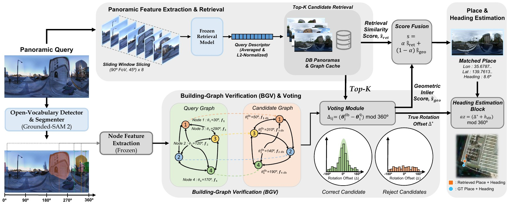
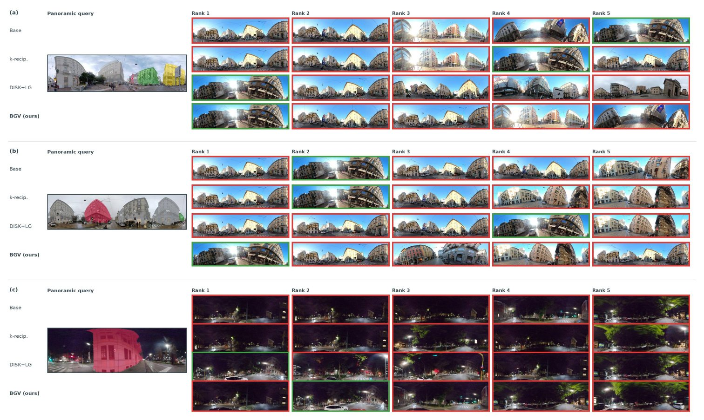

Abstract
Visual place recognition (VPR) retrieves the location of a query image from a geotagged database. A 360° panorama is a particularly suitable query for this task, as it captures the entire surrounding scene at once, including the spatial arrangement of nearby buildings that is stable over time and reveals the camera heading; however, exploiting this structure within standard retrieval pipelines is not straightforward. In this paper, we propose a simple yet effective pipeline that retrieves full panoramic queries from existing road-view archives without retraining any retrieval network. We represent each panorama as a graph of buildings and their relative directions and verify retrieved candidates through rotation-aware matching, which simultaneously estimates the camera heading at no additional cost. Extensive experiments across 10 cities and 5 query domains demonstrate that our method consistently improves recall for six pretrained retrieval models, with the largest gains under a 16-year temporal gap and a viewpoint change between pedestrian queries and vehicle-mounted road views. Moreover, the recovered heading attains a median error of 2–3°.
Training-free
No weights learned, nothing retrained
The detector, the node encoder and the retrieval model all run with their public pretrained weights. One scalar, the fusion weight α, is fixed at 0.6 for every city, set and model.
Retrieval-agnostic
Improves 17 of 18 model–set pairs
Six retrieval models spanning a decade of VPR design, from NetVLAD to SALAD. The gains are largest where appearance matching is weakest: +9.9 to +15.1 R@1 for NetVLAD, +17.3 on the pooled multi-year set.
Orientation for free
Median heading error of 2–3°
The quantity being voted on is a rotation, so the absolute camera heading falls out of re-ranking itself. A built-in inlier gate keeps 91–99.5% of accepted headings within 20°.
Lightweight
2.3 ms per query, 25.6 KB per image
Hundreds of local features become a handful of building nodes. BGV is second only to DISK+LightGlue in recall, at 1/871 of its matching time and 1/10 of its cache, and is the only method that also returns the heading.
Method
Building-Graph Verification
Given a single query panorama, the goal is to output both the place and the absolute camera heading, using an existing road-view archive and no additional training. Retrieval and graph extraction run in parallel; verification joins them.

Pipeline. A frozen retrieval model encodes the query from eight 90° vertical windows and returns the top-100 candidates. Grounded-SAM 2 detects buildings; each becomes a node with a bearing θ and a DINOv2 feature. Matched building pairs vote for the rotation offset Δ between the two panoramas: for a correct candidate the votes agree, for a wrong one they scatter. The vote mass re-ranks the candidates, and the winning offset plus the database heading gives the absolute heading.
- Panoramic feature extraction
The equirectangular image is sliced into eight overlapping vertical windows (90° wide, 45° stride, full height), each encoded by the frozen retrieval model. The descriptors are averaged and L2-normalised into one vector per panorama. Any pretrained model drops in without architectural change.
- Building-graph extraction
An open-vocabulary detector and segmenter find the buildings. Each building i is a node with a bearing θi, read directly from the horizontal centre of its mask, and a 768-d DINOv2 feature. Edges are the relative directions between nodes, which do not change when the panorama is rotated. Database graphs are cached once, offline, and the cache does not depend on the retrieval model.
- Two-stage retrieval with BGV
Stage 1 retrieves the top-100 candidates by nearest-neighbour search. Stage 2 matches query and candidate buildings by mutual nearest neighbours in feature space; each matched pair votes Δij = (θjdb − θiq) mod 360°. The rotation that the most pairs agree on, within ±20° and weighted by match similarity, gives the geometric score. The final score fuses it with the retrieval score, s = α ŝret + (1 − α) ŝgeo, with α = 0.6 everywhere.
- Heading estimation
The selected rotation is refined by a similarity-weighted circular mean of the inlier votes, then added to the stored heading of the matched road view: az = (Δ* + hdb) mod 360°. The inlier count doubles as a confidence gate: a heading supported by at least three agreeing buildings is reported, one from a single accidental match is not.
Dataset
10 cities, 5 query domains, a 16-year gap
Every set is retrieved against the same road-view archive; the sets differ in how the query was captured. Three vary the platform (road-view, pedestrian, bike), two vary the condition (night queries against a daytime database, and queries captured 6 to 16 years before the database). Pedestrian captures use the platform's own on-foot label, rider captures are verified from the nadir band of each sequence, and night captures by image luminance rather than timestamp. A retrieved image counts as correct within 25 m; a query is included only if a database image lies within 12 m.
| Query set | #Query | #DB | Cities |
|---|---|---|---|
| Road-view | 5,481 | 78,222 | 8 |
| Pedestrian | 4,817 | 78,371 | 7 |
| Bike (bicycle + motorcycle) | 4,891 | 23,066 | 5 |
| Night | 1,233 | 14,091 | 2 |
| Multi-year (6–16 yr) | 364 | 11,976 | 2 |
Amsterdam, Auckland, Bangkok, Boston, Denver, London, Milan, Santiago, Seoul, Tokyo. #DB is the sum of per-city databases; retrieval runs within the database of the query's own city. All Mapillary imagery is CC BY-SA. For Seoul, whose road-view archive is commercially licensed, the building-graph caches and the evaluation protocol are released in place of the source images.
Quantitative results
Same-domain and cross-viewpoint retrieval
Base is each pretrained model with the eight-window encoding; +BGV adds verification with the single global α = 0.6. BGV improves recall in 17 of the 18 model–set pairs. The size of the gain follows the strength of the retrieval model rather than the set: NetVLAD gains 9.9 to 15.1 R@1, the ResNet-50 models 2.1 to 6.9, the two DINOv2-based models −0.2 to 3.2. Pedestrian queries, the setting a deployed system would actually face, are the hardest set and the one where the gains are largest for every model but NetVLAD.
| Road-view queries | Pedestrian queries | Bike queries | ||||||||||||||||||
|---|---|---|---|---|---|---|---|---|---|---|---|---|---|---|---|---|---|---|---|---|
| Base | +BGV | Base | +BGV | Base | +BGV | |||||||||||||||
| Model | R@1 | R@5 | R@10 | R@1 | R@5 | R@10 | R@1 | R@5 | R@10 | R@1 | R@5 | R@10 | R@1 | R@5 | R@10 | R@1 | R@5 | R@10 | ||
| NetVLAD | 34.3 | 49.3 | 55.7 | 49.4 | 63.5 | 67.7 | 8.2 | 16.8 | 21.1 | 18.1 | 28.6 | 35.2 | 21.1 | 34.9 | 41.6 | 35.2 | 47.9 | 53.9 | ||
| CosPlace | 76.7 | 84.2 | 86.0 | 80.0 | 86.6 | 88.1 | 41.2 | 48.7 | 52.8 | 48.1 | 56.4 | 60.0 | 50.2 | 56.5 | 59.8 | 56.5 | 62.8 | 66.0 | ||
| EigenPlaces | 78.2 | 84.9 | 87.0 | 80.6 | 87.5 | 89.2 | 42.9 | 49.6 | 53.1 | 48.9 | 55.7 | 59.8 | 53.9 | 60.7 | 63.9 | 59.5 | 65.8 | 68.2 | ||
| BoQ (R50) | 80.6 | 86.4 | 88.5 | 82.7 | 88.5 | 90.1 | 49.2 | 57.2 | 61.1 | 55.0 | 63.4 | 66.5 | 68.6 | 74.4 | 77.3 | 71.9 | 77.7 | 80.1 | ||
| BoQ (DINOv2) | 88.9 | 93.7 | 94.7 | 89.7 | 94.0 | 95.4 | 71.5 | 79.6 | 82.2 | 74.1 | 82.6 | 85.4 | 82.3 | 87.2 | 88.9 | 82.1 | 87.7 | 89.3 | ||
| SALAD | 86.5 | 92.2 | 93.3 | 87.4 | 92.7 | 93.9 | 64.5 | 72.6 | 76.1 | 67.7 | 77.0 | 79.9 | 78.0 | 83.8 | 86.0 | 78.8 | 84.8 | 87.2 | ||
Recall (%) pooled across cities, all three sets against the same road-view archive. Bold: the better of each pair.
Night-to-day and multi-year
Night is the hardest condition for appearance matching: the ResNet-50 family collapses from 77–81 R@1 to 26–33. Building layout is unaffected by lighting, and every model improves at R@1. The multi-year set, queries captured 6 to 16 years before the database, gives the largest gains in the evaluation: facades are repainted and shops change, but where the buildings stand is mostly preserved.
| Night → day (n = 1,233) | Multi-year, pooled (n = 364) | Seoul, 16-year gap (n = 232) | ||||||||||||||||||
|---|---|---|---|---|---|---|---|---|---|---|---|---|---|---|---|---|---|---|---|---|
| Base | +BGV | Base | +BGV | Base | +BGV | |||||||||||||||
| Model | R@1 | R@5 | R@10 | R@1 | R@5 | R@10 | R@1 | R@5 | R@10 | R@1 | R@5 | R@10 | R@1 | R@5 | R@10 | R@1 | R@5 | R@10 | ||
| NetVLAD | 11.4 | 20.2 | 24.0 | 18.3 | 27.4 | 30.7 | 13.7 | 28.9 | 36.6 | 31.0 | 54.1 | 62.1 | 17.7 | 35.8 | 45.3 | 37.5 | 60.3 | 68.1 | ||
| CosPlace | 26.1 | 31.1 | 34.6 | 28.9 | 34.2 | 36.6 | 69.5 | 83.5 | 87.3 | 75.6 | 86.3 | 88.2 | 74.1 | 91.4 | 94.8 | 80.6 | 92.7 | 95.3 | ||
| EigenPlaces | 27.5 | 31.6 | 33.9 | 29.1 | 33.7 | 35.7 | 72.5 | 81.6 | 85.2 | 77.2 | 84.1 | 87.9 | 76.7 | 88.4 | 93.1 | 81.5 | 90.1 | 94.4 | ||
| BoQ (R50) | 33.4 | 40.3 | 42.1 | 35.3 | 41.4 | 43.3 | 74.7 | 83.5 | 86.8 | 79.7 | 86.0 | 88.7 | 78.0 | 89.2 | 92.7 | 84.1 | 91.8 | 94.8 | ||
| BoQ (DINOv2) | 71.8 | 78.5 | 81.3 | 72.1 | 79.3 | 82.4 | 89.0 | 93.2 | 94.8 | 86.3 | 94.8 | 96.4 | 90.9 | 96.6 | 98.3 | 87.5 | 98.3 | 99.6 | ||
| SALAD | 64.9 | 72.6 | 75.8 | 66.7 | 74.3 | 77.5 | 84.0 | 91.7 | 93.2 | 85.7 | 92.8 | 94.2 | 85.3 | 93.5 | 95.3 | 86.6 | 94.8 | 96.1 | ||
Recall (%). Night pools Boston and Denver; multi-year pools six-year Boston pairs (n = 132) and 16-year Seoul pairs (n = 232). Even where BoQ (DINOv2) loses the top-1 slot, R@5 and R@10 improve in every column.
Heading accuracy
Ground truth is the compass value stored with the query, which the pipeline never reads. The median error is 1.8–4.1° over all queries and 1.7–3.1° under the confidence gate (nin ≥ 3). The gate responds to the domain gap the way it should: coverage stays at 76–79% on road-view and bike queries, drops to 68% for pedestrians and 54% at night, while the accuracy of the queries that pass changes far less. The system answers less often under difficult conditions, and keeps the answers it gives reliable.
| All | Gated (nin ≥ 3) | |||||
|---|---|---|---|---|---|---|
| Query set | n | Median | Median | ≤ 5° | ≤ 20° | Coverage |
| Road-view | 2,812 | 1.83° | 1.71° | 85.8 | 99.5 | 79 |
| Pedestrian | 2,932 | 4.11° | 3.13° | 64.6 | 91.0 | 68 |
| Bike | 3,800 | 2.97° | 2.58° | 75.9 | 97.7 | 76 |
| Night | 725 | 2.68° | 2.78° | 75.8 | 99.0 | 54 |
| Multi-year | 111 | 2.85° | 2.24° | 76.9 | 94.9 | 70 |
SALAD as the retrieval model; ≤ 5° and ≤ 20° are the fraction (%) of gated queries, Coverage the fraction (%) passing the gate. Seoul is excluded because its archive has no measured compass, so the multi-year row covers Boston only.
Against other re-ranking methods
Every method re-ranks the same top-100 candidates from frozen SALAD on 300 Milan pedestrian queries, each with its own best fusion weight; BGV keeps the fixed α = 0.6. Point-level matching does not transfer to this setting: handcrafted keypoints gain at most 0.3 R@1 at over a second per query, and k-reciprocal re-ranking degrades recall because consecutive road-view panoramas are mutual neighbours of one another. DISK+LightGlue surpasses BGV by 2.7 R@1, at 871× the matching time and 10× the cache.
| Method | R@1 | R@5 | R@10 | Match (ms) | Cache (KB) | Extract (ms) | α* |
|---|---|---|---|---|---|---|---|
| Stage-1 only (SALAD) | 75.7 | 84.0 | 88.0 | – | – | – | – |
| αQE | 76.3 | 83.0 | 87.0 | 0.25 | 0 | 0 | – |
| k-reciprocal | 71.3 | 80.7 | 83.3 | 9.8 | 0 | 0 | – |
| RootSIFT + MAGSAC++ | 76.0 | 84.3 | 88.7 | 1,154 | 897 | 100 | 0.8 |
| ORB + MAGSAC++ | 75.3 | 85.3 | 88.7 | 945 | 78 | 26 | 0.8 |
| DISK + LightGlue | 81.0 | 89.3 | 92.7 | 2,022 | 260 | 35 | 0.5 |
| LoFTR | 76.3 | 84.3 | 90.3 | 11,411 | 1,024 | 17 | 0.7 |
| BGV (ours) | 78.3 | 88.3 | 90.7 | 2.32 | 25.6 | 441 | 0.6 |
Match is per query, cache per database image, extraction offline. BGV is the only entry that also returns the camera heading.
Qualitative results
Re-ranking comparison

Re-ranking on Milan pedestrian queries. Green: within 25 m; red: outside. (a) Appearance ranks a street 728 m away first and k-reciprocal keeps it; DISK+LightGlue and BGV both recover the correct place at 11.3 m, BGV in 2.3 ms rather than 2.0 s, and with the heading. (b) The point matcher fails too, ranking a candidate 737 m away first, while the building layout still identifies the correct place at 9.5 m. (c) A failure of our method: the dark query yields a single building node, the vote collects one inlier, the confidence gate is not passed, and the top-1 stays 622 m away.
Walking through Seoul with no compass and no GPS
Each frame of a pedestrian 360° sequence is localised independently against the Seoul road-view archive: stage-1 SALAD, then BGV re-ranking, no temporal filtering. Both rows share one compass centred on the direction of travel, so the retrieved road view is rotated by the recovered Δ and turns together with the walker. Left: the ground-truth track with the estimated place and heading cone.
Stage-1 SALAD, eight windows; BGV re-ranking with α = 0.6; no temporal filtering. Videos play silently and loop.
BibTeX
Placeholder until the official WACV 2027 entry is released.
@inproceedings{min2027panopolis,
title = {PanOpolis: City-Scale Panorama-to-Panorama Place Recognition with Orientation for Free},
author = {Min, Donghyeok and Bui, Toan Manh and Oh, Inyoung and Cho, Junghyun},
booktitle = {Proceedings of the IEEE/CVF Winter Conference on Applications of Computer Vision (WACV)},
year = {2027}
}